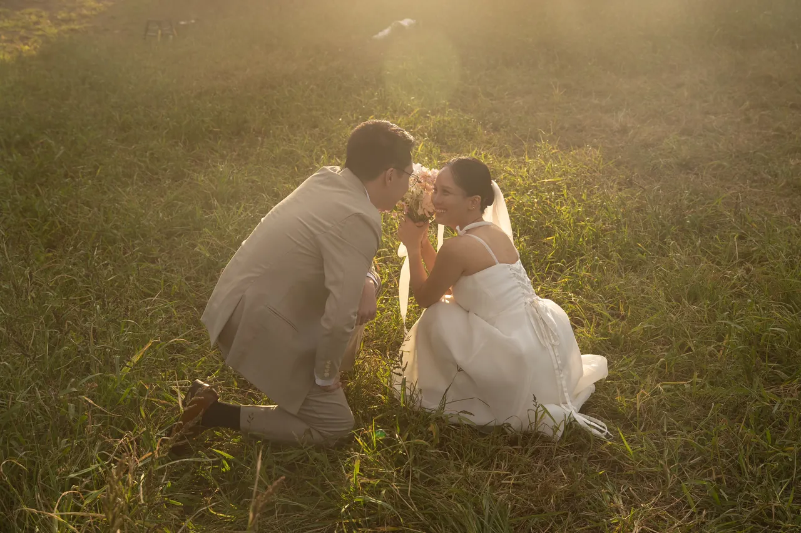

蓝钿宇 & 黄育娴
Wedding photobook婚纱照
Jerrold and May met at NUS. Though they came from very different faculties, they found each other in an unexpected place: volunteering.
They soon realised they were like pieces from two different jigsaw puzzles that somehow fit together. Where everyone else groaned at Jerrold’s cold jokes, May couldn’t stop laughing.
And so began their journey together, from student days into adulthood, and now on to their next chapter.
钿宇和育娴在新加坡国立大学相识。两人来自截然不同的学院，却在一个意想不到的场合走到了一起：做义工。
他们很快发现，彼此就像来自两副不同拼图的拼块，却奇妙地契合在一起。别人听了钿宇的冷笑话直摇头，育娴却笑个不停。
就这样，他们一起从校园走进社会，如今携手迈向人生的新篇章。